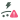

유해균 종합
장 건강을 방해하는 유해균 점수
68점양호
지난 검사와 이번 검사를 비교해, 우리 아이가 어떻게 달라졌는지 살펴보아요.

컨디션 점수가 큰 변화 없이 유지되고 있어요.
지금의 생활 패턴을
이어가며 다음 변화도 함께 살펴보아요.
장 건강을 방해하는 유해균 점수
68점양호
보챔을 유발하는 나쁜 균
68점양호
배변 리듬을 방해하는 나쁜 균
68점양호
숙면을 방해하는 나쁜 균
68점양호
숙면을 방해하는 나쁜 균
68점양호

피부 트러블을 유발하는 나쁜 균
68점양호